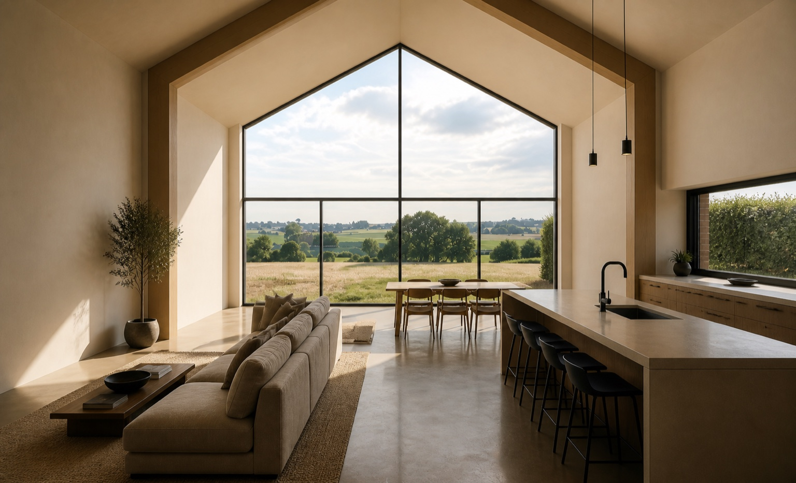
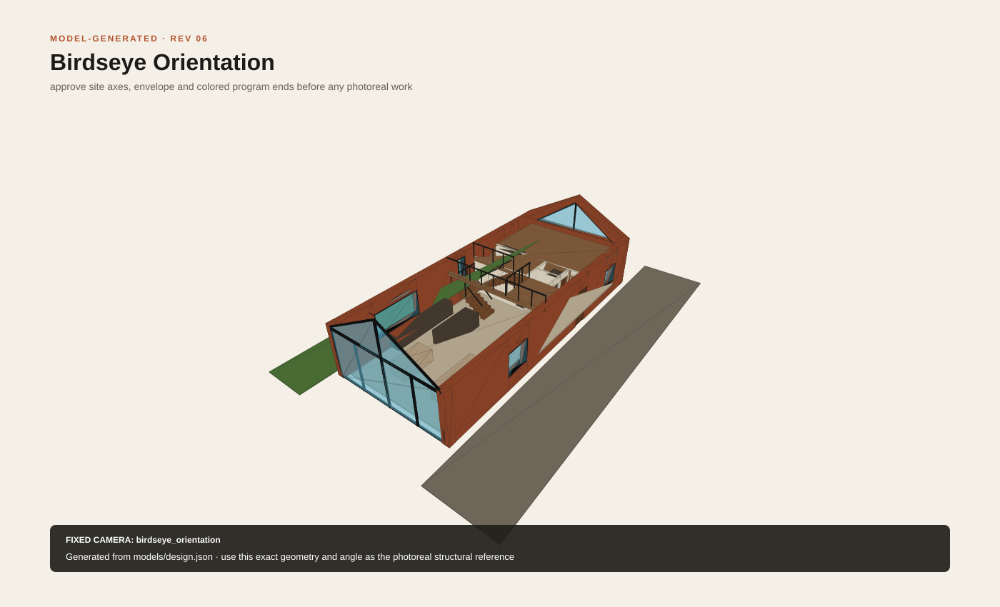

The glass gable
The living room opens toward the valley while the narrow paved passage and neighbouring brick building remain exactly where they are.

A restrained Flemish barn outside. A warm, open living hall framing the valley inside.
The architecture changes. The working lane, neighbouring building, hedges, trees and cobbled courtyard do not. Rev 08 remains the approved baseline; Rev 09 adds only the selected valley shading and grass-grid patio for geometry review.
The living room opens toward the valley while the narrow paved passage and neighbouring brick building remain exactly where they are.
Photo 1 is taken from the valley/pasture end looking back toward the rear gate. The full glass gable is nearest and visible; the large kitchen window, tall stair window and bedroom pair then recede in that order without narrowing tractor access.
The new full-width site reference confirms the complete 17 m courtyard elevation. The smoked-oak entrance sits right of centre beside the retained tree, with one living-room window to its left and one master-bedroom window to its right.
The selected Rev 09 direction combines nine external fins over only the triangular glass, a 1.25 m passive roof visor and a compact grass-grid patio. Living grass fills a concealed cellular reinforcement system over an open-graded base, avoiding a stone patio or impermeable slab. The rectangular ground-floor glass and valley panorama remain completely clear. Geometry review, municipal acceptance and PHPP/designPH sizing are still required before final approval.
The front half stays open to the ridge. This reverse model camera looks toward the valley glass: the lane-side kitchen is on the right, while living and the clear courtyard route are on the left.
The owner’s bird's-eye orientation drives one parametric GLB. Rev 09 retains the envelope, openings, rooms, stair and mezzanine while adding the selected upper-gable veil and grass-grid patio for review.

If interactive 3D is unavailable, the generated bird's-eye poster remains visible and the GLB can be downloaded directly.
These fixed cameras use the Rev 09 review geometry: the approved thick ICF shell, openings, dog-leg stair and mezzanine, plus the selected upper-gable veil and grass-grid valley patio.
The plans and 3D views are generated from one specification. The daily layout is unchanged from Rev 08; the Rev 09 solar-control and patio additions remain under geometry review.